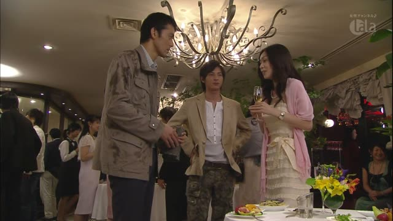
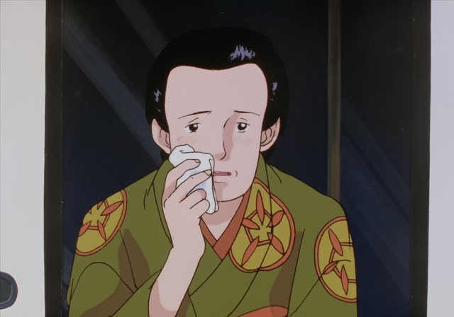
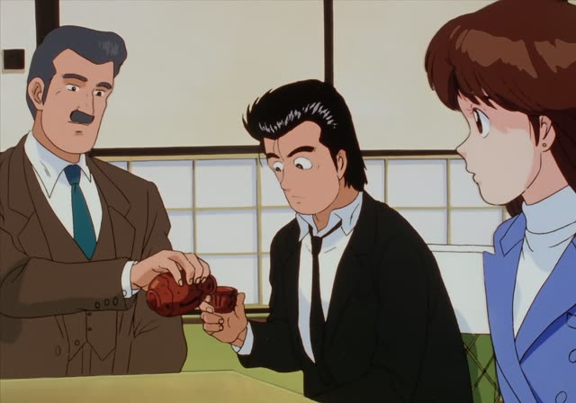
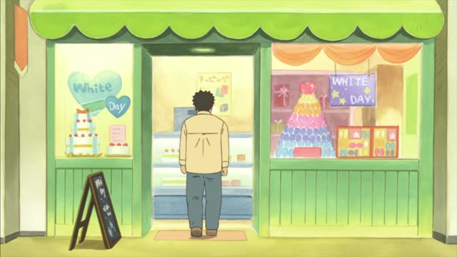

Respectful verbs (尊敬語)

Kekkon Dekinai Otoko · Episode 1
すいません、あっ、あの、何か召し上がります？
"Sorry, um, would you like something to eat?"
Respectful verbs raise up the person doing the action: a customer, a boss, a guest. A few common verbs have their own special word: 食べる・飲む → 召し上がる, 言う → おっしゃる, いる・行く・来る → いらっしゃる, 見る → ご覧になる, する → なさる.
On this card, a woman on a date offers Kuwano something to eat. 召し上がります = the respectful 食べます.
You never use them about yourself. For your own actions, use humble verbs (next page).

Oishinbo · Episode 12
もう一度、作り直して来いとおっしゃるんです。
"He says to make it all over again." [about a demanding guest]
On this card, the restaurant owner talks about Kaibara Yuzan, an important guest. おっしゃる = the respectful 言う.
Quick Examples
A waiter to a customer.
何を召し上がりますか？
"What would you like to have?"
PoliteAsking about your boss.
部長は明日いらっしゃいますか？
"Will the manager be in tomorrow?"
いらっしゃる = いる.
PoliteA teacher said something.
先生がおっしゃったとおりです。
"It's just as the teacher said."
PoliteA shop clerk.
どうぞ、ご覧ください。
"Please, have a look."
ご覧 = 見る.
PoliteWith and without
先生は何を食べますか？
"What will the teacher eat?" Polite.
先生は何を召し上がりますか？
"What will the teacher have?" Respectful.
Examples from Media
Shirokuma Cafe · Episode 13
最近、よくいらっしゃいますよね。
"You've been coming a lot lately."
いらっしゃる = 来る.

Oishinbo · Episode 12
どなたかいらっしゃるんですか？
"Is someone else coming?"
いらっしゃる = 来る / いる.
Aggretsuko · Season 1, Episode 2
ごゆっくりご覧くださーい。
"Take your time looking!"
ご覧ください = 見てください.
Samurai Champloo · Episode 15
ようこそいらっしゃいまし。
"Welcome."
An old-fashioned いらっしゃいませ.
Death Note · Episode 11
では、ご覧ください。
"Now, please watch."
Aggretsuko · Season 1, Episode 1
いらっしゃいませ。お一人様ですか？
"Welcome. Just one?"
The shop greeting is a respectful verb.

Shirokuma Cafe · Episode 48
いらっしゃいませ。
"Welcome."
Vinland Saga · Episode 2
ハッ、お行儀がよくていらっしゃる。
"Ha, aren't you well-mannered."
いらっしゃる used with sarcasm.